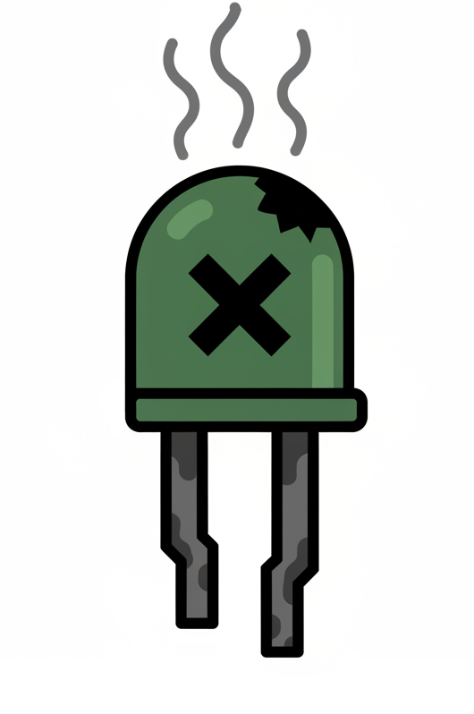
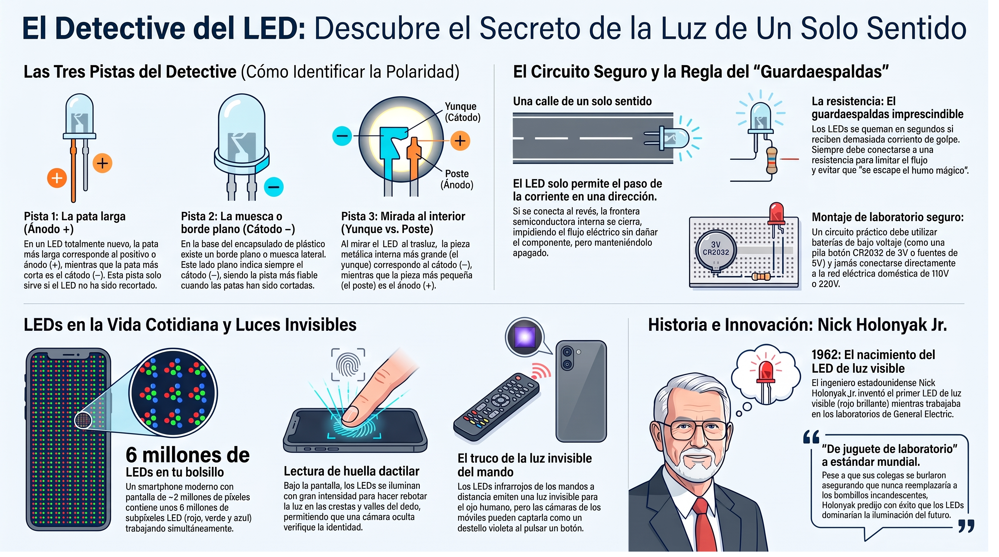

🔵 El detective del LED
📱 ¿Alguna vez has mirado una pantalla de cerca?
Toma tu celular y acércalo mucho a los ojos. ¿Qué ves? Si tienes buena vista (o usas una lupa), verás unos puntos diminutos de colores: rojos, verdes y azules. Esos puntitos son LEDs. Y no son unos pocos: un teléfono moderno tiene aproximadamente 2 millones de píxeles, y cada píxel está formado por tres LEDs (rojo, verde y azul). Eso significa que llevas en el bolsillo unos 6 millones de LEDs funcionando al mismo tiempo.
👆 ¿Sabías que…? Esos mismos LEDs de la pantalla también sirven para leer tu huella dactilar. Cuando pones el dedo sobre el sensor, los LEDs de esa zona se encienden con mucha intensidad. La luz rebota en las crestas y los valles de tu huella, y una pequeña cámara escondida debajo de la pantalla capta la imagen y verifica quién eres.
🔍 Pruébalo: si tu celular tiene lector de huella en la pantalla, fíjate la próxima vez que lo desbloquees. Vas a ver un destello de luz justo donde pones el dedo. Ahí están trabajando los LEDs, iluminando tu huella para que el celular te reconozca.
Un LED es una pequeña luz que se enciende cuando pasa corriente por él. La palabra viene del inglés Light Emitting Diode, que significa "diodo emisor de luz". Pero no te preocupes por el nombre: lo importante es lo que hace.
💡 Idea clave: los LEDs están en tu celular, en el flash de la cámara, en la linterna, en los controles del televisor, en los semáforos, en las luces de los juguetes. Los usas todo el tiempo sin darte cuenta.
🔌 ¿Por qué un juguete deja de encender?
Imagina que tienes un juguete con una lucecita roja. Un día la lucecita deja de funcionar. Tú sabes que la pila está bien, que los cables están conectados. Pero nada. ¿Qué pasó?
Muy probablemente, alguien conectó el LED al revés. A diferencia de una resistencia (que funciona en cualquier dirección) o de un cable (que conduce por igual en ambos sentidos), el LED solo funciona si la corriente entra por un lado específico. Si entra al revés, el LED no enciende. No se quema, no explota: simplemente se queda apagado, como si estuviera desconectado.

💡 El LED es una calle de un solo sentido. Si caminas por la dirección permitida, llegas al final. Si caminas al revés, te bloqueas y no pasa nada.
🛡️ El guardaespaldas del LED
Los LEDs son resistentes en un sentido, pero delicados en otro: si les llega demasiada corriente de golpe, se queman en segundos. Por eso siempre se conectan con una resistencia al lado. Es su guardaespaldas.

Cuando un LED se quema, deja de funcionar para siempre. Los ingenieros dicen, con humor, que "se escapó el humo mágico". Por eso la regla es clara: nunca conectes un LED sin una resistencia.
🔍 Taller: El detective de polaridad
¿Alguna vez has mirado un LED a contraluz? Si lo sostienes contra el sol o una lámpara, puedes ver su interior a través del plástico. En este taller vas a aprender a leer lo que ves ahí dentro. Pero si tomas uno de esos LEDs que se quemaron en un juguete o en una linterna vieja, verás que tiene dos patas y un lado plano.
En este taller vas a descubrir qué significan. Y lo más interesante: vas a poder identificarlo incluso si las patas están cortadas al mismo largo, como suele pasar con los LEDs reciclados.

🧰 Materiales
- Tres o cuatro LEDs (pueden ser reciclados de juguetes viejos).
- Una pila de 3V (CR2032) con su portapilas.
- Una resistencia de 220 Ω o 330 Ω.
- Cables caimán (o cables comunes).
- Cinta adhesiva (de papel o negra aislante). Sirve para sostener las patas del LED y los cables si no tienes cables caimán, o si las conexiones se sueltan con facilidad.
- Una lupa (opcional, pero ayuda mucho).
🛠️ Procedimiento
- Reúne los LEDs. Si tienes LEDs nuevos, mira la pata más larga. Si tienes LEDs reciclados, revisa las tres pistas con atención.
- Pista 1 — Pata larga. En un LED nuevo, la pata más larga es el ánodo (+). La más corta es el cátodo (−).
- Pista 2 — Muesca lateral. Mira el borde de plástico del LED. Uno de los lados es plano, no redondo. Ese lado plano siempre marca el cátodo (−). Esta pista funciona incluso si las patas están cortadas al mismo largo.
- Pista 3 — El interior del LED. Sostén el LED contra una luz y mira a través del plástico. Verás dos piezas metálicas dentro. La más grande (el yunque) es el cátodo (−). La más pequeña (el poste) es el ánodo (+).
- Verifica con el circuito. Monta el circuito: pila → resistencia → LED → pila. Prueba con el LED en una dirección y luego en la otra. ¿En cuál enciende?
-
Dibuja esta tabla en tu bitácora y complétala para cada
LED que tengas:
LED Pata larga Muesca Interior ¿Encendió? 1 ☐ Sí / ☐ No ☐ Sí / ☐ No ☐ Sí / ☐ No ☐ Sí / ☐ No 2 ☐ Sí / ☐ No ☐ Sí / ☐ No ☐ Sí / ☐ No ☐ Sí / ☐ No 3 ☐ Sí / ☐ No ☐ Sí / ☐ No ☐ Sí / ☐ No ☐ Sí / ☐ No
🔍 ¿Qué descubriste? Comparando tus tres LEDs, ¿cuál pista coincidió siempre con el resultado del circuito? Esa es tu pista más confiable. Cuando encuentres un LED reciclado con patas cortadas, puedes empezar por ahí.
❓ Pregunta guía
¿Por qué crees que el LED solo funciona en una dirección? ¿Qué crees que pasaría si pudieras ver los electrones moverse por dentro?
💡 ¿Sabías que…? Los LEDs infrarrojos de los controles remotos emiten luz que nuestros ojos no pueden ver. Pero la cámara del celular sí la capta. Si apuntas el control del televisor hacia la cámara del celular y presionas cualquier botón, verás un punto violeta parpadeando en la pantalla. ¡Acabas de descubrir una luz invisible!
💡 Sobre instrumentos de medida: si tienes acceso a un multímetro en el colegio, tiene un "modo diodo" que identifica la polaridad sin montar el circuito. No es obligatorio.
⚠️ Seguridad: trabaja siempre con 3V o 5V. Nunca uses voltajes de pared (110V o 220V). Siempre usa la resistencia de protección con el LED.
📜 El hombre al que se rieron por inventar una luz
La pantalla que tienes en tu celular, el flash de una cámara, la linterna de tu casa. Todos usan LEDs. Pero el LED no apareció de la nada. Hace sesenta años, nadie sabía cómo hacer uno. Un hombre lo logró, y sus colegas se rieron de él.
💡 Nick Holonyak Jr. (1928–2022) — El padre del LED visible
Nick Holonyak nació en 1928, hijo de inmigrantes ucranianos que trabajaban en una mina de carbón en Estados Unidos. Creció en una familia humilde y llegó a la universidad gracias a su esfuerzo.
En 1962, mientras trabajaba en el laboratorio de General Electric, logró algo que nadie había conseguido: construir un LED que emitía luz visible. No era un punto de luz microscópico como los de antes; era un LED rojo brillante que se podía ver a simple vista.
Cuando lo presentó, muchos colegas se rieron. Decían que el LED era un "juguete de laboratorio", incapaz de reemplazar a las bombillas incandescentes. Que nunca serviría para nada práctico.
Holonyak no se rindió. Siguió investigando y predijo: "Algún día, los LEDs reemplazarán a las bombillas". Y tenía razón. Murió en 2022, habiendo visto su predicción cumplirse: los LEDs están en semáforos, pantallas, linternas y en casi cualquier dispositivo moderno. La próxima vez que mires la pantalla de tu celular, acuérdate de él.
Holonyak tuvo algo en común con otros grandes científicos: no se rindió cuando otros dudaron de él. Su trabajo cambió la forma en que iluminamos el mundo.
Fuentes: archivos históricos de General Electric y biografías de la Universidad de Illinois.🗺️ Repaso visual

El detective del LED
Dale play y en menos de 5 minutos descubrirás:
- 📱 La pantalla de tu celular: cómo millones de LEDs diminutos forman las imágenes que ves.
- 🔍 Las tres pistas: cómo identificar el ánodo y el cátodo de un LED, incluso si las patas están cortadas.
- 👁️ La luz invisible: cómo usar la cámara del celular para ver el LED infrarrojo de un control remoto.
- 💡 Holonyak y el LED: el hombre al que se rieron por inventar una luz.
- 📱 La pantalla que te conoce: cómo millones de LEDs forman las imágenes… y también leen tu huella.
💡 Escúchenlo en familia y comenten lo que más los sorprendió.